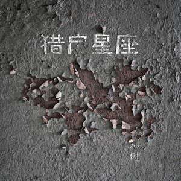

- 歌曲歌手专辑
- 1平凡之路朴树猎户星座
- 2平凡之路 (舒缓版)打扰一下乐团未知
- 3平凡之路 (中文电摇)DJ奶小深我是邓良深
- 4平凡之路 (Faded版)一人众天只为初心
- 5平凡之路周深平凡之路
- 6平凡之路阿细平凡之路
- 7平凡之路 (愤怒版)Aka梦未知
- 8平凡之路唐云飞演员和歌手
- 9平凡之路侃侃在远方
- 10平凡之路张翘平凡之路
- 11平凡之路 (说唱版)白耀坤平凡之路（说唱版）
- 12平凡之路于亮平凡之路
- 13平凡之路罗萨平凡之路
- 14兄弟抱一下于亮平凡之路
- 15唐人于亮平凡之路
- 16平凡之路洛天依洛天依作品集
- 17平凡之路 (电摇版)DJ王展鹏DJ嗨曲
- 18平凡之路 (说唱版)王路未知
- 19平凡之路小魂未知
- 20平凡之路 (英文RAP说唱版)DJ Mr.An平凡之路说唱
- 21平凡之路胡彦斌未知
- 22平凡之路 (说唱版伴奏)陈军导80000
- 23平凡之路 (伴奏)孙沐平凡之路
- 24平凡之路 (伴奏)方木智商二五零
- 25平凡之路 (DJ版)DJ叶奎未知
- 26平凡之路 (DJ版)7玉不倒电音
- 27刚好遇见你VS平凡之路 (DJ版)DJ崧少潮流带感
- 28平凡之路 (铃声版)黄祖波2016平凡之路铃声版
- 29平凡之路马里奥未知
- 30平凡之路潇斌过去
- 加载更多

- 平凡之路 (《后会无期》电影主题曲) - 朴树
- 词：韩寒/朴树
- 曲：朴树
- 徘徊着的 在路上的
- 你要走吗 Via Via
- 易碎的 骄傲着
- 那也曾是我的模样
- 沸腾着的 不安着的
- 你要去哪 Via Via
- 谜一样的 沉默着的
- 故事你真的在听吗
- 我曾经跨过山和大海
- 也穿过人山人海
- 我曾经拥有着的一切
- 转眼都飘散如烟
- 我曾经失落失望失掉所有方向
- 直到看见平凡才是唯一的答案
- 当你仍然 还在幻想
- 你的明天 Via Via
- 她会好吗 还是更烂
- 对我而言是另一天
- 我曾经毁了我的一切
- 只想永远地离开
- 我曾经堕入无边黑暗
- 想挣扎无法自拔
- 我曾经像你像他像那野草野花
- 绝望着 也渴望着
- 也哭也笑平凡着
- 向前走 就这么走
- 就算你被给过什么
- 向前走 就这么走
- 就算你被夺走什么
- 向前走 就这么走
- 就算你会错过什么
- 向前走 就这么走
- 就算你会
- 我曾经跨过山和大海
- 也穿过人山人海
- 我曾经拥有着的一切
- 转眼都飘散如烟
- 我曾经失落失望失掉所有方向
- 直到看见平凡才是唯一的答案
- 我曾经毁了我的一切
- 只想永远地离开
- 我曾经堕入无边黑暗
- 想挣扎无法自拔
- 我曾经像你像他像那野草野花
- 绝望着 也渴望着
- 也哭也笑平凡着
- 我曾经跨过山和大海
- 也穿过人山人海
- 我曾经问遍整个世界
- 从来没得到答案
- 我不过像你像他像那野草野花
- 冥冥中这是我 唯一要走的路啊
- 时间无言 如此这般
- 明天已在 Hia Hia
- 风吹过的 路依然远
- 你的故事讲到了哪